Paying for a story: Hell Gate, 404 Media, and what Bushwick Daily will do
Phone screenshots, 2026-10-13. Hell Gate signed in as a free member (owner’s account); 404 Media with an email that has no account; anonymous captures for everything else. Each caption quotes the screen. Full evidence: research reports 27 and 28 in the repo. The Bushwick Daily column shows the approved design mockups (iPhone 13). They are being built into the site now, for review on a private preview link.
1. The gate in the article
Hell Gate


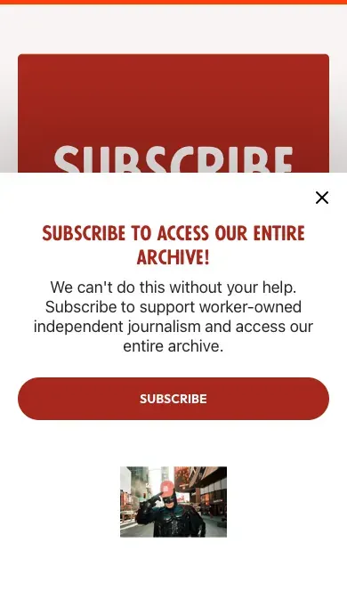
404 Media

Bushwick Daily (proposed)

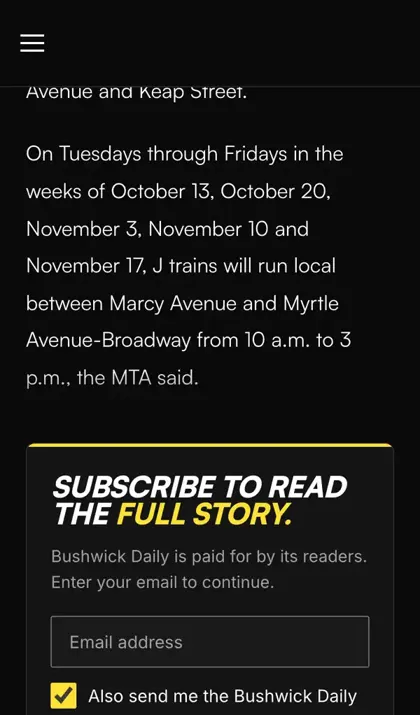
Keep: the article’s free opening, then one clear box. Fix: one gate only (no slide-up competing with it, no ad over it). Our box asks for the email (plus the newsletter box) and Continue.
2. The first tap
Hell Gate

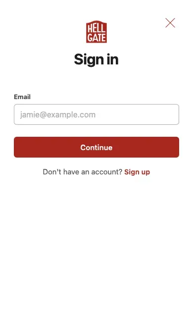
404 Media

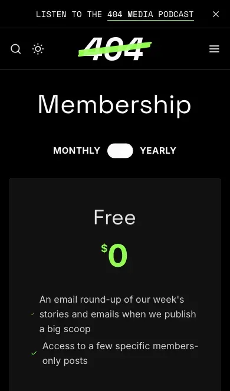

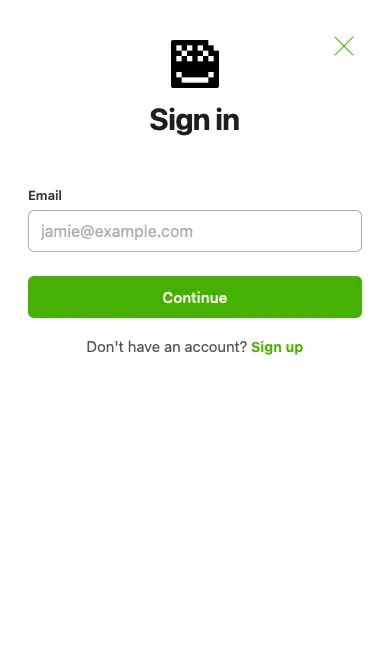
Bushwick Daily (proposed)

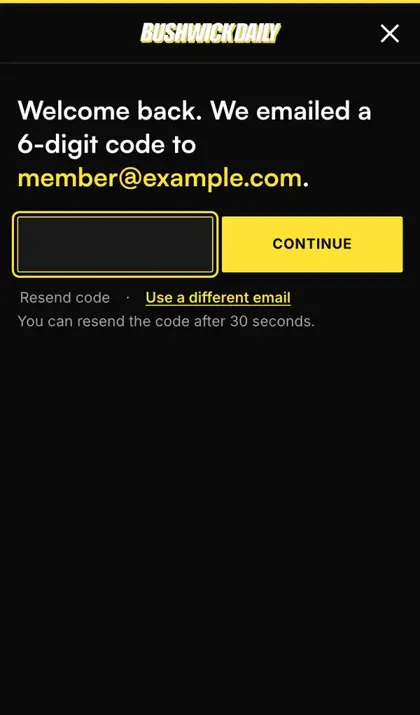

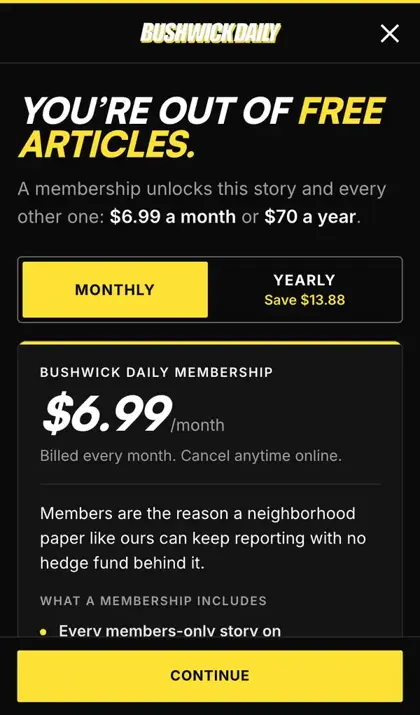
Keep: a full-screen sheet on the phone. Fix: same tab, same article; the sheet opens directly on the right step (code for members, plans for everyone else).
3. Telling a signed-in reader where they stand
Hell Gate

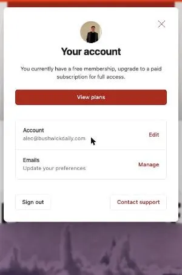
404 Media

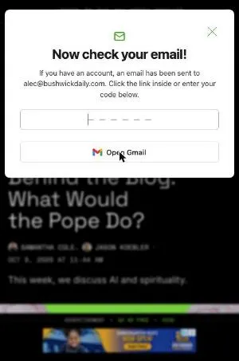
Bushwick Daily (proposed)

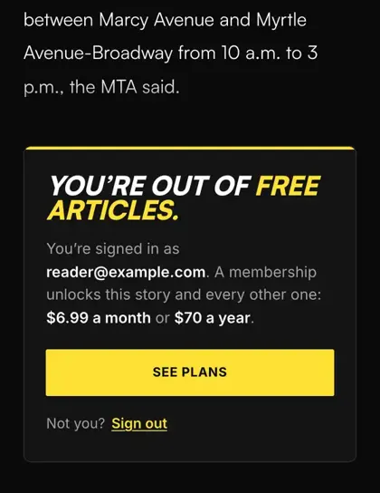

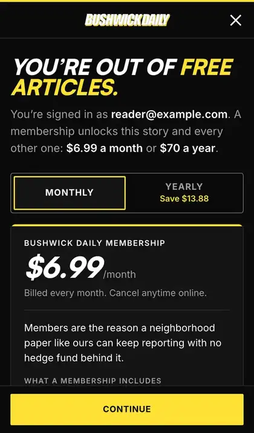
Fix both: the sheet says “You’re out of free articles.” “You’re signed in as {email}. A membership unlocks this story and every other one: $6.99 a month or $70 a year.” A new email goes straight to the plans; we never say “check your email” when nothing is coming.
4. Choosing a plan
Hell Gate

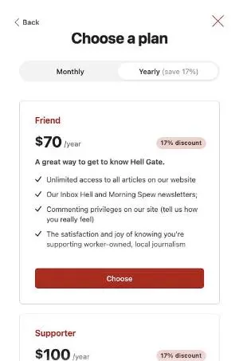
404 Media

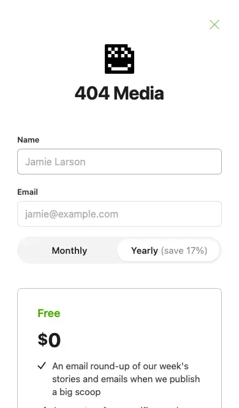
Bushwick Daily (proposed)

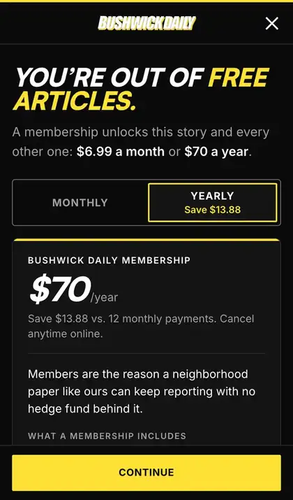
Keep: full screen, the Monthly/Yearly switch, a short list of what you get, one button. Fix: one plan (no tier maze), savings as money (“Yearly saves $13.88”), the price matches the headline. Monthly comes selected (both sites preselect Yearly), and the selected option never looks like the button.
5. Paying
Hell Gate

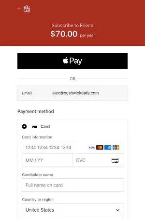
404 Media
“SUBSCRIBE NOW” goes straight to Stripe’s hosted checkout with no email step. Stripe’s saved-card feature pre-filled a saved card, so one tap would have charged. (Screenshot withheld: it shows a payment card.)
Bushwick Daily (proposed)

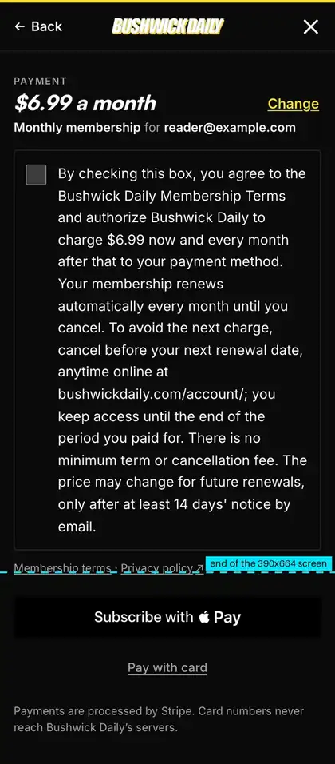

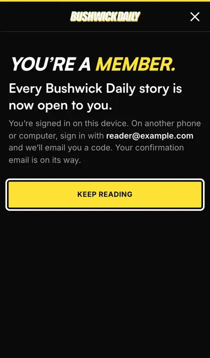
Fix: the reader never leaves the article. Payment happens inside the sheet, in this order: price and address, the consent box with the legal disclosure, the black Apple Pay button, “Pay with card”, Subscribe. On success the sheet closes and the story unlocks where they were.
6. Getting out
Hell Gate
Phone: only the X closes it. Escape does nothing on the phone, and the phone’s Back button never closes the sheet (it does nothing in the new tab, or leaves the article). Desktop: Escape works.
404 Media
Same as Hell Gate (same Ghost Portal 2.72.3). Back from the Sign in sheet left the article.
Bushwick Daily (proposed)
Fix: X, Escape (phone and desktop) and the phone’s Back button all close the sheet and return to the same spot in the article. The page behind can’t scroll while the sheet is open (both sites do this; we keep it).